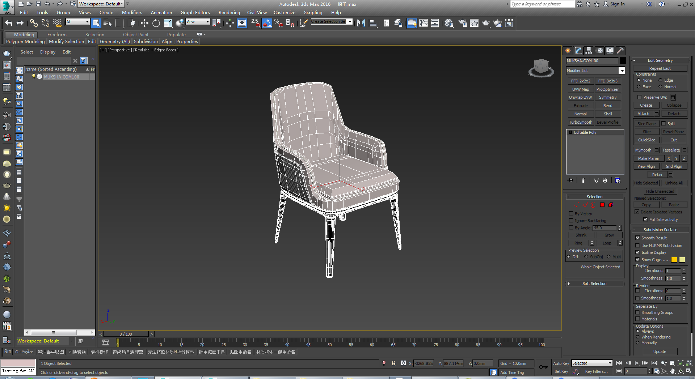
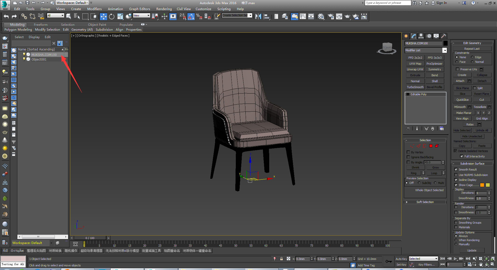
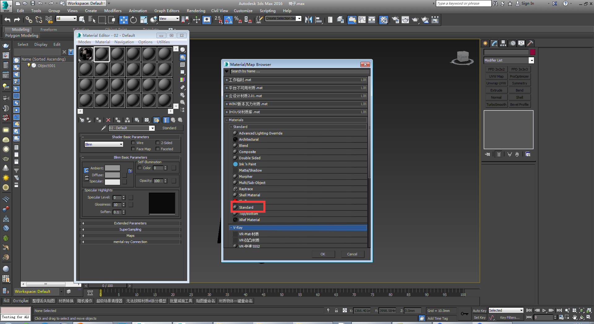
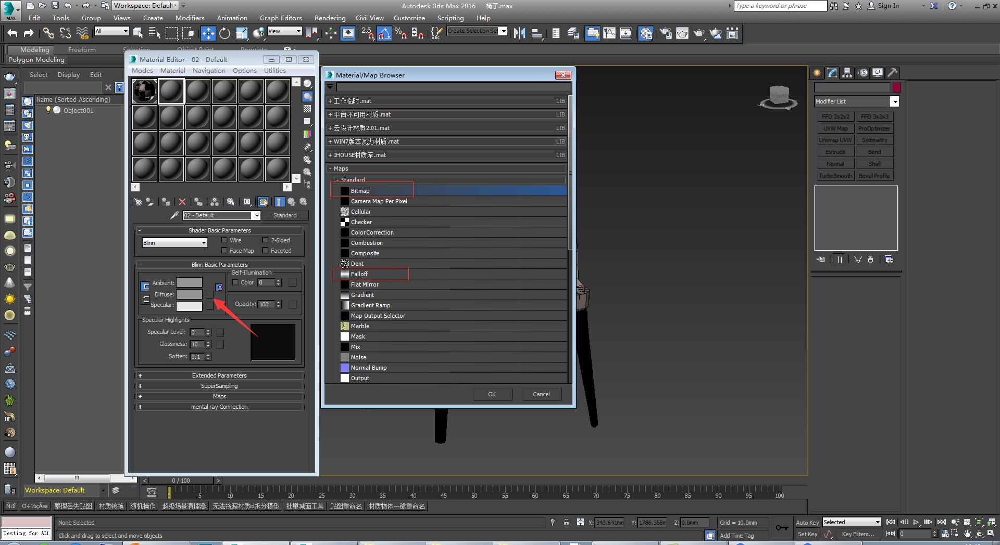
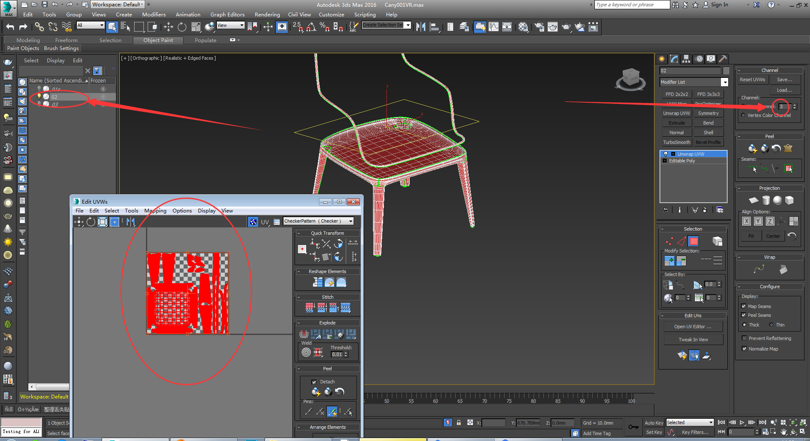
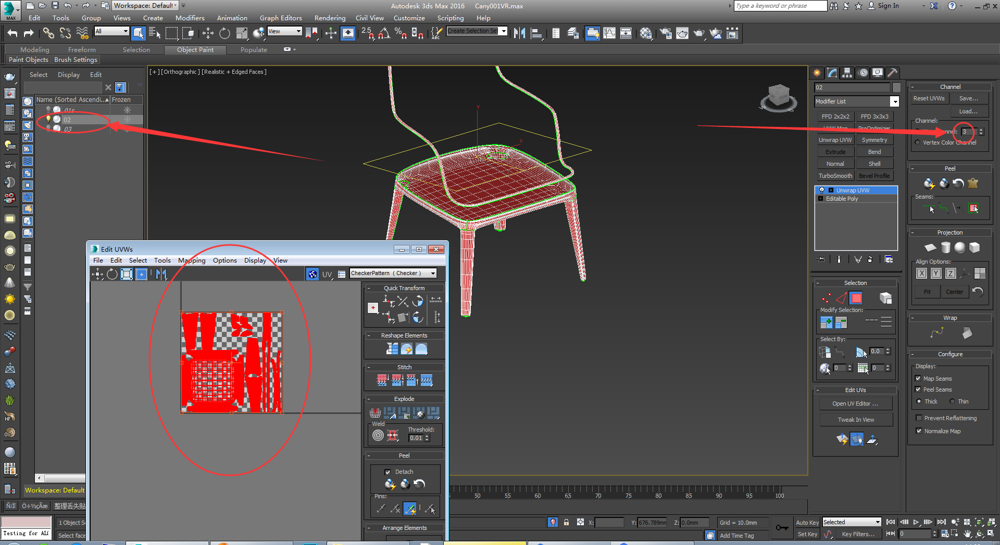
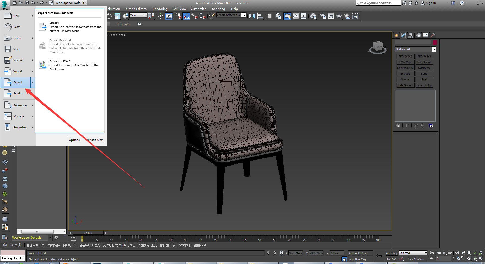
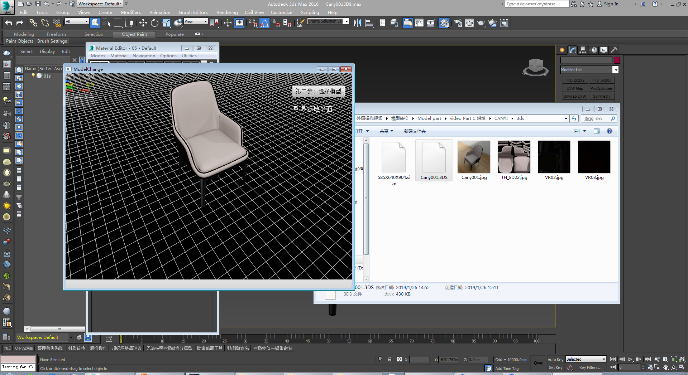
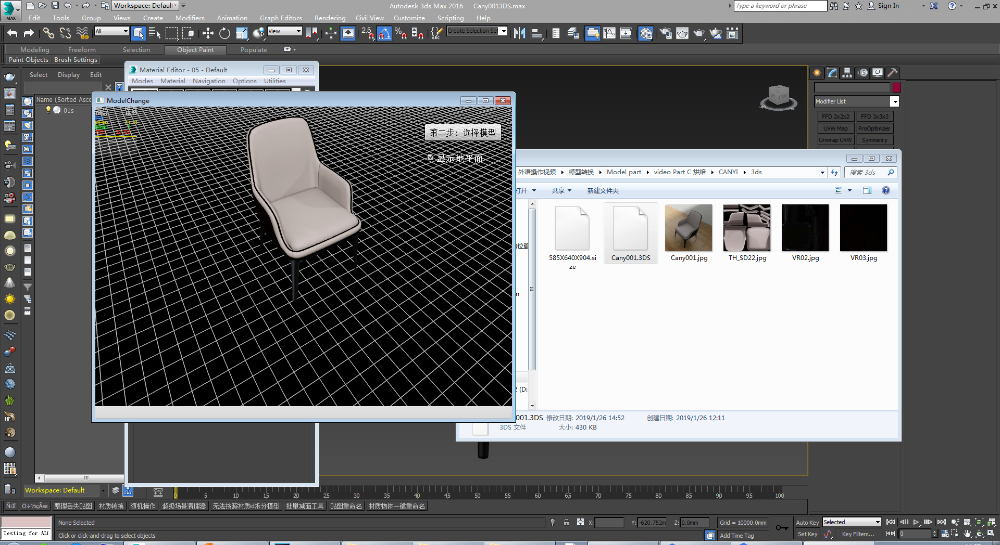

转模步骤
一、模型下载
二、处理文件存储
复制并重命名转模案例的文件夹，给MAX文件、3DS、VR及缩略图重命名（以英文开头加数字的方式命名且必须相同，字符中间不能有空格键及其他内容，缩略图为150X150像素大小，1058x753x385.size文件是用来记录模型的尺寸）。
三、（导出VR文件）打开要处理的模型，另存为导出VR文件的MAX文件，调整材质和贴图导出VR文件：
a、解散全部组,去掉涡轮平滑，转换为可编辑多边形后附加成一个整体
b、单位统一调整为毫米
c、停止启用Gamma校正
d、用场景助手插件把模型的坐标轴调整到模型
e、顶视图中通过旋转调整模型朝向（正面向前）


f、模型世界坐标轴归零(鼠标右键点击即可归零)
j、在元素模式下，选中模型所有元素分离为对象，删除掉除分离对象以外的东西
k、调整模型材质及贴图
01、按m键打开材质编辑器，重置材质编辑器窗口，拾取模型材质
02、材质：MAX标准材质库中只能用标准材质球，VR材质可以使用：VR标准材质、VR灯光材质（贴图不能使用）、VR混合材质、VR材质包裹器。
03、材质球贴图；图片命名统一格式为：a MAX贴图库中，只能使用标准材质贴图里面的位图和衰减
b图片命名方式：以英文字母开头后加数字且名字不超过8字符,
c裁剪功能不能使用，
d可替换材质贴图（原来使用MAX颜色的材质，用PS做一张对应RGB的图片,图片大小为512x512像素；执行UVmap命令，选择BOX,贴图大小为512x512x512，Select BOX, texture size 512x512x512。可替换的图片TH_开始，例如:TH_sd21。）

f双向反射分布函数：只能使用反射
g调整完所有材质贴图，刷新Sitft+T面板，查看所有贴图的名称和路径是否都调整完成
l、重置变换俩次，查看模型是否反面。如果有反面，执行翻转或者法线命令，再重置变换俩次，塌陷全部；没有反面直接塌陷全部。
m、调整渲染设置（渲染设置里面不能有贴图，可先调回默认扫描线渲染器，再切换到VR渲染器即可
n、保存模型尺寸
o、场景清理

P、另存为导出VR文件的MAX

q、导出VR文件
四、（导出3DS）打开导出VR的MAX文件，另存为导出3DS的MAX文件。
1、打开VR的MAX文件，另存为3DS的MAX文件，单独分离所有可替换材质的元素，不可替换材质的元素按大小分离（烘焙贴图大小最大不超过512x512像素，通用为256X256）

2、按分离好的对象，分别在UV通道3中展开UV，删除掉隐藏的面。
 


3、保存3DS的MAX文件，另存为灯光MAX文件
4、导入模板灯光和渲染设置


5、复制VR文件夹中的以TH_前缀的贴图到3DS文件夹
6、调整烘焙参数及烘焙贴图的名称/存储位置/格式等信息后烘焙贴图

7、保存灯光max文件，打开3DSmax文件，将烘焙完的贴图赋予模型，将UV通道3中的UV移动到通道1，

8、减面（简单模型三角面不超过8千，复杂模型三角面数不超过3万）：
b、调整焊接阈值，不改变模型造型的基础上焊接顶点

c、数字键7显示模型面数统计面板，Alt+b设置查看方式为三角形面数
d、专业优化:将面数较高的元素分离出来，用专业优化工具减面
8、全部附加成一个整体，重置变换俩次，转换为可编辑多边形

9、导出3DS文件
10、截取缩略图
11、将模型3DS文件拖拽到查看器中，调整烘焙贴图，检查3DS模型，若没有问题即可上传模型。
 
